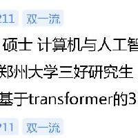

Software Development Engineer | M.S. in Computer Technology
📍 Shanghai, China
📱 +86 178-0390-8300
I am a Software Development Engineer at AVIC Simulation System Co., Ltd. in Shanghai, specializing in simulation system development, computer vision, and human action recognition. I received my M.S. in Computer Technology from Zhengzhou University. I have published an oral paper at ACCV 2022 and hold patents and software copyrights.
AVIC Simulation System Co., Ltd. | Shanghai, China
Sub-system Lead
Software Lead
Algorithm Lead
Focal and Global Spatial-Temporal Transformer for Skeleton-based Action Recognition
ACCV 2022 (CCF Recommended International Conference) · Oral Presentation
Invention Patent: Human Action Recognition Network and Electronic Device Based on Self-Attention Mechanism
Software Copyright: Unity-based Virtual Human Motion Capture Customization Platform V1.0
Zhengzhou University (211) | School of Computer and Artificial Intelligence
Research Focus: Transformer-based 3D Human Action Recognition
Honors: Graduate Merit Student, First-class Academic Scholarship
Zhengzhou University (211) | School of Software